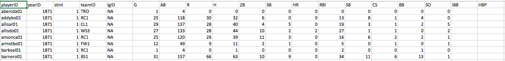
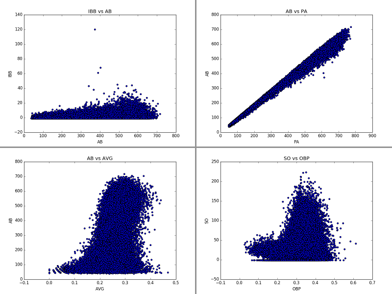

Will Joey Votto Make the Hall of Fame?
November 21, 2016 - Python and SQLThere are many things I love about baseball, but perhaps the part I find most beautiful is the ability to sum the current situation of the game in one sentence. "We're in the top of the 9th, 3 to 2 for the home team, 2 balls and no strikes, man on first." That one line tells you everything you need to know about the game, assuming you know the lingo. This is a consequence of an extremely "state" driven game. Taking it a step further, if you break the game into independent chunks (inning, score, runners, balls-strikes), you can discern the current state of the entire game. This takes us back to my absolute favorite part of baseball: if everything is a state, then every state can be given statistics. Want to know how many of a particular players hits are doubles? We have the stats. Want to know how often a player tries to steal a base and gets caught? We have the stats. You get the idea.
In present MLB culture, the "stat heads" are overtaking the "old-guard," those that believe statistics are hokum. Data is revolutionizing the game as teams use all of the available data to make predictions on where a player is most likely to hit the ball or what type of pitch he's least likely to hit, and then act on it. Perhaps unsurprisingly, this is working. Just ask the 2016 Chicago Cubs.
This battle between stat heads and the old-guard is perhaps most clear when people talk about the Hall of Fame (HOF). Stat heads are pointing to players like Joey Votto, my favorite player, and saying things like: "he contributes more increase in winning percentage to his team than any other player in the NL." That's a pretty dense statement with a lot of calculations and assumptions hidden behind it. For example, how much is getting on base worth towards winning the game? How much more is a double worth than a single or a walk? The finer details of these calculations are a discussion for another time; but it comes down to this: many of the anti-stat writers and announcers are pushing back on the idea that Joey Votto belongs in the HOF, while the stat-people are saying he is a clear HOFer.
So I thought, why not see what the data actually says? We have this beautiful game, with tons of data recorded for every player. We also have a list of who has made the hall of fame. I bet I can merge these two together and predict whether Joey Votto has a shot at the hall of fame based on comparing his career statistics with other HOFers. Better yet, I can make predictions on who, among active or recently retired players, is likely to get the nod. So let's talk techniques. The first thing to do was get some data.
Wonderfully enough, it's not too hard to find a database. After some searching about the web, I found a database here. Inside are the statistics for every person who's ever had an at-bat in a major league game since 1871. So let's have a look at the data:  There are a few things to unpack here. First, everyone is identified by an ID code word instead of their name. Second, we see that most of the stats are the typical stats but they're broken down by player and season. Third, we see that there are some blanks in the data, especially in the 'ye olde player' section where the information just wasn't recorded at the time.
The first thing to do is map the data and have a look for problems within the data set. Shown below, I've plotted the correlations between the different types of data with the blank spots removed for visualization purposes. This serves two purposes: 1) Outliers will show up along each axis and 2) It allows me to identify any information that is one-to-one correlated (redundant information) such that in the future I'm not double counting a type of statistic. The code I wrote actually produces almost 300 plots showing the correlations between each statistics with each other statistic, a few interesting examples are shown here.  On the top left we see data that shows little correlation. Someone with 100 AB in a season is almost as likely to have 5 IBB (intentional walks) as someone with 400 AB in a season. On the top right we see data that is extremely correlated, that's because these are two numbers that measure how many times a player comes to the plate to face a pitcher, the only difference is whether to include certain types of rare-ish events in the counting (BB, HBP, etc). So, we don't really need to include both of these features in our analysis. The bottom left chart is perhaps the most interesting plot to consider. There is a very loose correlation between at-bats and batting average, with batting average being one of the most commonly used metrics for discussing a baseball players greatness. However, that correlation doesn't really start until over 100 ABs. This is because baseball is a game of failure. The greatest hitters of all time still fail 70% of the time. That means a large sample is necessary to truly find out how well a player plays. With only 100 ABs, we still can't tell much about a hitter in a given season. For this analysis, we are going to place a requirement that more than 100 ABs occur in a season for that season to be considered. Finally, on the bottom right I've drawn a plot that shows what is called a double banded structure. It's a unique looking plot that shows us there isn't much of a correlation between OBP (on-base percentage) and SO (strike outs), but there does seem to be two types of players, those with low OBP and a relatively low number of strike outs, and "the rest." After checking into it, the lower band tends to be players with only a few ABs, and will be removed by our "100 AB" requirement.
Now let's jump to the interesting part - machine learning. For each player I created a data structure that holds all of his stats, separated by seasons, and whether or not he has made the hall of fame. I removed pitchers from the data, because they make it to the hall of fame for their arm and not their bats and would skew the results. I then separated the players into three groups: "Eligible and retired long enough to have been considered for the hall of fame", "Not yet retired or not retired long enough to be eligible", and "ineligible" based on the Hall of Fame requirements for entry. From this, I took the first group and split it further, placing 70% into a "training" data set for my machine learning algorithms and 30% into a "testing" group. The training group helps teach the model what types of stats are correlated with someone making the HOF. For instance, if the model was trained with only Babe Ruth and Joey Cora, it might think that hitting for power is the key to the HOF since Mr. Ruth is in and Mr. Cora is not. The key is to feed it as many test samples as possible so that it can find overall patterns in the data that can be used to predict whether a player makes it or not. The testing group will be used to evaluate how well my algorithm can do at determining if a player actually makes the hall of fame. After testing the algorithm I can apply it to the group of "modern players" that we want to make predictions about.
This is simple enough in theory, however there are some subtleties I'd like to discuss. First, only ~2% of players that are eligible make the hall of fame, so this data is dominated by "no" answers to the question "did he make the hall of fame?" That means the algorithm would be ~98% accurate if it just always said no. It also means we need to be careful about our training data. The predictions are going to vary greatly if the only person in the training data that makes the hall of fame is Babe Ruth vs Barry Larkin (famous for power hitting vs famous for consistent hitting with less power), which is a form of systematic bias. To overcome this, I've used a bootstrap method. A bootstrap method is a technique of randomly selecting data many times from a single large source of data to form many smaller data sets. I've combined this with a method of forcing 70% of "yeses" and 70% of "noes" to go into the training data individually instead of just 70% of all players. This means my training data will always have yes's and no's to train on. For the bootstrap method, I've implemented a way of sampling the data to build the training set thousands of times with different players used for training and testing. Then, I calculated the probability of making the hall of fame for each modern player based on all of these samples. Averaging over many different training sets removes a systematic bias implicit to choosing a subset of players to train the data.
With just these assumptions, we can apply various machine learning algorithms and look at the probability of each modern player making the HOF. For each version of the bootstrap, we can plot that probability. Organized from low-to-high probability, that gives a plot like this:
Another thing to consider in the model is whether we want to look at accrued stats or rate of accrual. In my first model, I naively just summed up each players stats and tried to make a prediction. However, that heavily biases the result against players that have only been in the league a few years. It's simply not feasible that a player with only 5 years in the league will have the accrued stats of a HOFer with 12 years in the league. So, I switched to a model which accounts for the rate of accrual and calculates each players hits/season, walks/season, etc. Then I re-trained the model.
(Warning: Technobabble incoming) Finally, we need to consider which model to use. For all models, it's best to regularize the data by forcing the mean value for each stat type is 0 and the standard deviation is 1. This regularization is applied to the data for all models, in order to obey the "rules" of the models. Then I tried many different models: logistic regression, decision trees, boosted decision trees, and the random forest. I found the random forest to give the most accurate results in the testing data out of these models, so the results shown here are from that model. Anyone who made the HOF in at least one iteration of the model is noted here.
| First Name | Last Name | HOF Probability |
|---|---|---|
| Ichiro | Suzuki | 1.000 |
| Derek | Jeter | 1.000 |
| Robinson | Cano | 0.997 |
| Michael | Young | 0.995 |
| Vladimir | Guerrero | 0.993 |
| Todd | Helton | 0.983 |
| Chipper | Jones | 0.982 |
| Miguel | Cabrera | 0.979 |
| Nick | Markakis | 0.974 |
| Albert | Pujols | 0.965 |
| Elvis | Andrus | 0.951 |
| Jimmy | Rollins | 0.949 |
| Joey | Votto | 0.935 |
| Andrew | McCutchen | 0.929 |
| Matt | Holliday | 0.924 |
| Ryan | Braun | 0.922 |
| Adam | Jones | 0.893 |
| Dustin | Pedroia | 0.868 |
| Magglio | Ordonez | 0.848 |
| Ian | Kinsler | 0.831 |
| Matt | Carpenter | 0.811 |
| Adrian | Gonzalez | 0.802 |
| Mike | Trout | 0.785 |
| Lance | Berkman | 0.759 |
| David | Ortiz | 0.714 |
| Alex | Rodriguez | 0.696 |
| Ryan | Howard | 0.689 |
| Joe | Mauer | 0.659 |
| Eric | Hosmer | 0.649 |
| Prince | Fielder | 0.618 |
| Carlos | Lee | 0.606 |
| Brandon | Phillips | 0.604 |
| Billy | Butler | 0.603 |
| Freddie | Freeman | 0.597 |
| Johnny | Damon | 0.572 |
| Starlin | Castro | 0.54 |
| Adam | Dunn | 0.511 |
| Evan | Longoria | 0.482 |
| Adrian | Beltre | 0.48 |
| Josh | Donaldson | 0.477 |
| Ian | Desmond | 0.468 |
| Alexei | Ramirez | 0.42 |
| Paul | Goldschmidt | 0.351 |
| Jim | Thome | 0.341 |
| Mark | Teixeira | 0.33 |
| Miguel | Tejada | 0.317 |
| Juan | Pierre | 0.312 |
| Buster | Posey | 0.288 |
| Curtis | Granderson | 0.262 |
| Bobby | Abreu | 0.23 |
| Giancarlo | Stanton | 0.167 |
| Jay | Bruce | 0.163 |
| Jose | Altuve | 0.161 |
| Jose | Bautista | 0.159 |
| David | Wright | 0.142 |
| Jason | Giambi | 0.135 |
| Paul | Konerko | 0.126 |
| Torii | Hunter | 0.121 |
| Nolan | Arenado | 0.101 |
| Alfonso | Soriano | 0.072 |
| Vernon | Wells | 0.065 |
| Victor | Martinez | 0.057 |
| Hanley | Ramirez | 0.048 |
| Bryce | Harper | 0.045 |
| Brian | Dozier | 0.045 |
| Dan | Uggla | 0.036 |
| Pat | Burrell | 0.024 |
| Carlos | Pena | 0.023 |
| Edgar | Renteria | 0.018 |
| Chris | Carter | 0.011 |
| Jose | Reyes | 0.01 |
| Hideki | Matsui | 0.007 |
| Chris | Davis | 0.006 |
| Justin | Morneau | 0.006 |
| Mark | Trumbo | 0.006 |
| Carlos | Beltran | 0.006 |
| Anthony | Rizzo | 0.006 |
| Scott | Rolen | 0.005 |
| Edwin | Encarnacion | 0.005 |
| Aramis | Ramirez | 0.004 |
| Justin | Upton | 0.004 |
| Ryan | Zimmerman | 0.004 |
| Dexter | Fowler | 0.004 |
| Troy | Tulowitzki | 0.004 |
| Brian | McCann | 0.003 |
| Jason | Heyward | 0.003 |
| Travis | Hafner | 0.002 |
| Kevin | Youkilis | 0.002 |
| Jacoby | Ellsbury | 0.002 |
| A.J. | Pollock | 0.001 |
| Pablo | Sandoval | 0.001 |
| Carlos | Santana | 0.001 |
| Josh | Willingham | 0.001 |
| Mark | Reynolds | 0.001 |
| Eric | Chavez | 0.001 |
| Josh | Hamilton | 0.001 |
| Nelson | Cruz | 0.001 |
| Khris | Davis | 0.001 |
| Adam | LaRoche | 0.001 |
| Jack | Cust | 0.001 |
| Matt | Kemp | 0.001 |
| Andre | Ethier | 0.001 |
| Todd | Frazier | 0.001 |
| Chase | Utley | 0.001 |
The first, and most positive, note is that most of these players are well-known to the casual baseball fan. The algorithm is making predictions that agree with most baseball experts. For instance, Chipper Jones is widely believed to be a shoo-in for the hall of fame, and our model gives him a 98% chance of making it. The same for Derek Jeter. It also says that most of the current excellent players who are on pace to be shoo-ins, like Miguel Cabrera and Albert Pujols, have high probabilities. Perhaps even more encouraging, is that I don't see many names on here that I don't recognize (me being slightly more baseball-rabid than the normal fan). Those I do see that I'm not particularly familiar with, have very low probabilities. So the model is also accurately removing players that have no name recognition for being great. "Oh hey, I recognize that guy" isn't a metric I'd put on my resume, but it's definitely reassuring that the model is being successful.
I'd also like to spend a few sentences on the limitations of this model. There are many things this model doesn't account for, but the biggest ones I think are playing position, defense (as a whole), and home-field advantage. The position a player is known for makes a big difference in HOF selection. Someone who is an excellent shortstop will likely have a lower barrier for entrance in terms of hitting statistics than a first baseman (a position associated with power hitters). For instance, Buster Posey is one of the most heralded catchers of the past generation, yet only has a 30% chance according to this model. That's because this model doesn't know he's one of the best defensive catchers of all time. On the flip-side, Todd Helton is given a high probability of making the hall of fame, but the model doesn't know he played the majority of his games in Denver. The stadium in Denver is well-known for inflating offensive numbers because the atmosphere is much thinner at 5280 feet above sea-level. These are all secondary effects that need more study, but I think they are small effects and the results of this analysis can still be quite reliable and useful. Also of note, the model rewards players with spectacular years and punishes those with consistently above-average years, since it's based on the average rate of accrual. Johnny Damon had 17 years of above-average hitting, but only has a 57% chance to make the HOF in this model; whereas if I just model based on accrued statistics he has a 98% chance. It's vital to keep in mind that longevity isn't rewarded well in this model, and single explosive years are (if there aren't many other years to counter-balance).
So what does the model have to say about my man Joey Votto? It gives him a 93% chance, which puts him on par with the Albert Pujolses of the world. Frankly, that shouldn't be surprising given the excellent career that Joey Votto has had so far, but it's nice to dig in to the data and see that it's not just watching him that says he's great; he actually is on pace to sit among the legends of the game.
It's also really fun and interesting to look through some of the other names that show up.
- Todd Helton is a great example of a forgotten great hitter and someone that I didn't expect to find on this list.
- Ryan Howard is someone I had considered before doing this, but expected him not to make the list because he's generally seen as a massive failure. However, he's actually had an excellent career, despite never living up to the huge contract he was given.
- Brandon Phillips is perhaps the most shocking result to me. He is clearly an excellent defensive player, but the model doesn't know about defense. His hitting has been above average for his whole career, but not far enough above average that I expected to see him on the list. Yet the model gives him a 60% chance.
- Nick Markakis also surprised me. He doesn't get much fanfare besides often being noted as a good ball-player. However, a quick glance over his numbers shows he's had a nice career so far. He's perhaps being buoyed in these results by a particularly excellent second year though.